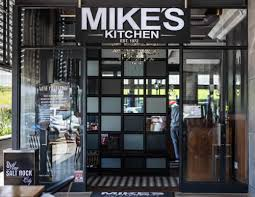
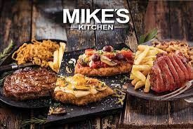
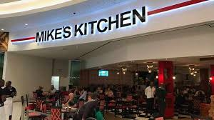
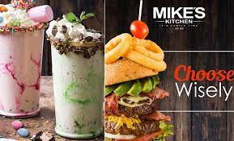

MIKES KITCHEN
Michael Elwin Kitchen (born February 1, 1956) is a Canadian former defenceman who is currently an assistant coach for the Florida Panthers of the National Hockey League.[1] As of February 2016, Kitch has coached in over 2400 NHL games including playoffs. In 2012/2013 he assisted in coaching the Hawks to their longest winning streak without a loss. He was selected in the third round of the 1976 NHL Amateur Draft, 38th overall, by the Kansas City Scouts. He was also taken in the seventh round of the 1976 WHA Amateur Draft, 83rd overall, by the Toronto Toros, although Kitchen ultimately chose to enter the NHL. Kitchen was born in Newmarket, Ontario, but grew up in Schomberg, Ontario. Mike is well known for his charitable work and has used his day with the Stanley Cup to raise funds for Southlake Regional Health Centre and other local charities. Kitchen is the older brother of Bill Kitchen, also a former hockey player.
Quality. Generosity. Family. Mike's Kitchen is an unforgettable & authentic proudly South African brand that creates memorable family experiences. Our dedicated team prides themselves in always serving you the highest quality ingredients with a smile. Established on 17 September 1972, Mike’s Kitchen quickly became a household name for families across the country, where the entire family feels at home with our famous mouth-watering rack of ribs, succulent and tender steaks and of course our legendary burgers and carvery! Your home, away from home. Mike’s Kitchen, it’s family time!
 